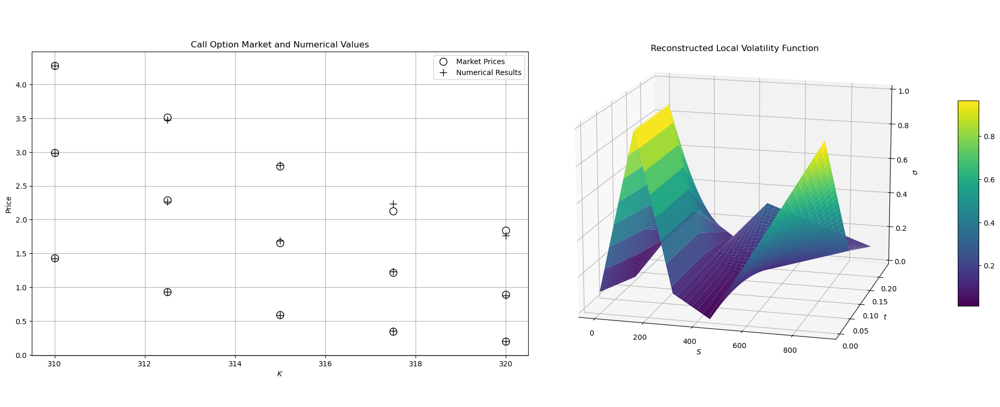
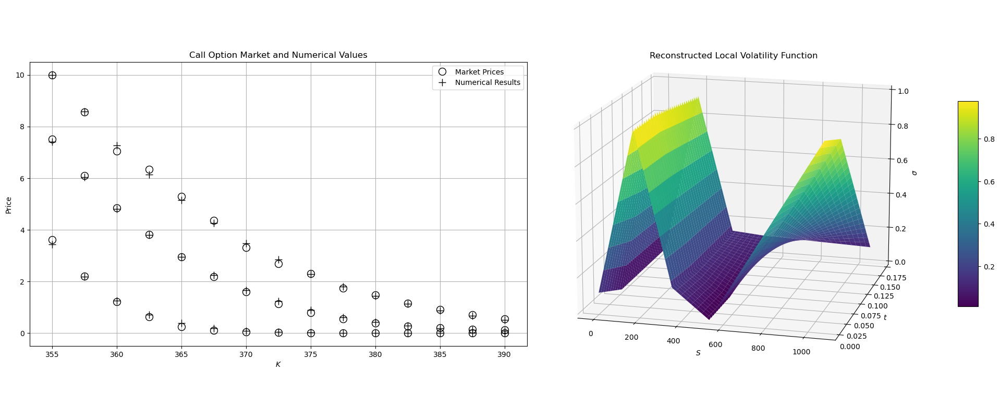
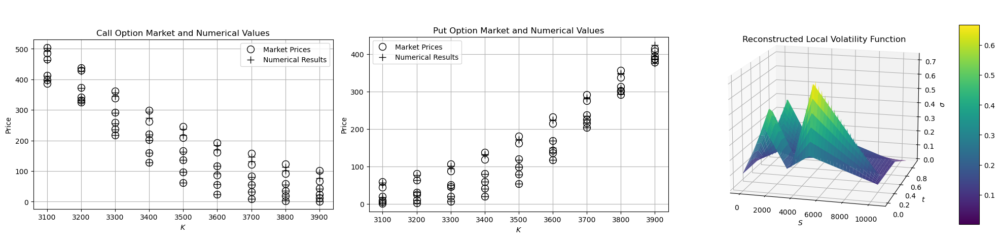
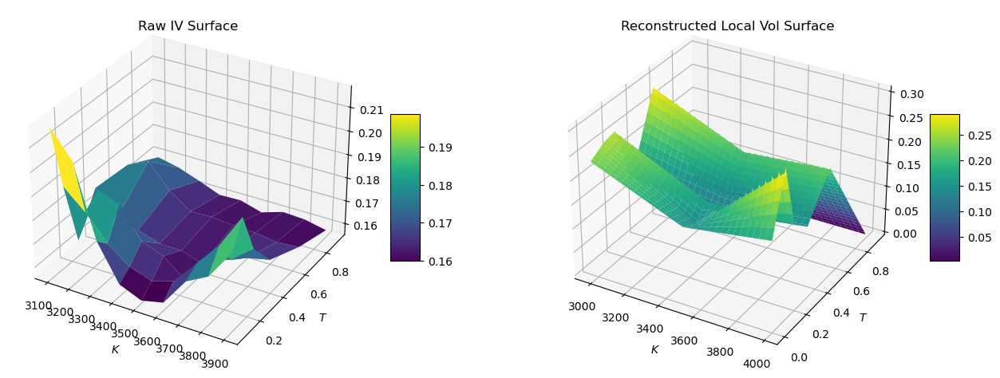

基于有限差分法的局域波动率模型定价#
简介#
本文通过一种基于有限差分法的局域波动率计算方法重构局域波动率曲面，该方法较之前的文章更为高效、精确，无需计算并平滑无套利隐含波动率曲面。
Kwak et al. (2022)定价原理：采用广义Black-Scholes方程和有限差分法对广义Black-Scholes方程进行数值求解，通过最小化成本函数对理论期权价格和市场期权价格进行拟合，该成本函数的表达形式为理论期权价格与市场期权价格差异的平方，将未知局域波动率的点置于到期日中间从而实现高效计算。通过实证分析，用该方法重构的局部波动率曲面简单高效。
拟合方法#
重构局部波动率函数 \(\sigma(S, t)\)的广义BS方程如下：
对于 \((S, \tau) \in \Omega \times （0, T ]\), 初始条件为\(\mu(S, 0)\)，其中\(\tau = T - t\)，\(\mu(S, t)\) 为期权价值。采用隐式差分法离散上述方程，通过拟合得出相应的局域波动率模型\(\sigma(S,t)\)，进而能够对场外期权进行定价。
实证分析#
原文献结果#
原文献仅对看涨期权进行了实证检验，Kwak et al. (2022) 局部波动率曲面仅适用于看涨期权。首先，采用原文的数据重构局部波动率曲面并与市场价格进行对比，复现原文献的结果。Kwak et al. (2022)中采用的CPU硬件为Intel® Core™ i9-12900K CPU @ 3.70GHz处理器，拟合45个真实市场数据点的CPU计算速度为9.58s。本文采用的测试机器为Intel® Core™ i7-8700K CPU @ 3.70GHz，进行相关优化后，CPU计算速度为3.3s。
采用2020年1月14日的KOSPI 200指数看涨期权的拟合结果如下： 
采用2022年4月8日的KOSPI 200指数看涨期权的拟合结果如下：

提升优化#
为了实现该方法的应用性，进一步提升计算效率。对输入数据也进行了处理，采用平价公式（Put-Call Parity）计算标的市场价格，重构的局部波动率曲面能够同时适用于看涨和看跌期权。根据市场情况，挂钩标的资产在不同的行权价下的当前市场价值的现货价格并不是一个常数，在拟合过程中会大幅降低计算速率。平价公式的计算形式如下：
\(S\) 为挂钩标的资产当前市场价值的现货价格
\(PV(K)\) 为行权价的现值
\(C\)为看涨期权的市场价
\(P\)为看跌期权的市场价
以沪深300股指期权为例#
采用2023年10月25日沪深300股指期权拟合局域波动率模型，并用该模型定价场内看涨和看跌期权。针对计算过程进行相关优化后，CPU计算速度为37.4s。计算结果如下:

与原始的隐含波动率曲面的对比如下：

结论#
本文基于Kwak et al. (2022)方法以及有限差分法直接拟合局域波动率曲面，无需反算隐含波动率并平滑存在套利机会的市场价格点，更有效、直接地描述市场的动态变化情况。然而，原文仅考虑看涨期权的波动率曲面，不能直接作用于场外衍生品的定价中。在金融市场中，同一个执行价下的看涨和看跌期权应为同一个波动率曲面。因此，通过平价公式计算出的标的当前现货价格为入参，从而拟合出的局域波动率曲面能够同时定价场内看涨和看跌期权，但是计算速率仍需进一步提高。
参考文献#
[1] Kwak S, Hwang Y, Choi Y, Wang J, Kim S, Kim J. Reconstructing the Local Volatility Surface from Market Option Prices. Mathematics. 2022; 10(14):2537.